MetaGPT：面向多智能体协作框架的元编程
现有 LLM 多智能体系统在复杂任务中因级联幻觉导致逻辑不一致，基于自由对话的角色扮演框架还存在无效闲聊与信息失真问题。MetaGPT 将人类软件开发的 SOP 编码为提示序列，把任务分解给 Product Manager、Architect、Project Manager、Engineer、QA Engineer 五个角色，Agent 间以 PRD、系统设计、接口定义等结构化文档交接而非对话，并通过全局消息池与订阅机制按角色过滤信息、缓解信息过载；Engineer 还引入可执行反馈机制，在运行时执行代码与单元测试并迭代调试（最多重试 3 次）。结果显示：与 GPT-4 结合在 HumanEval/MBPP 上取得 85.9%/87.7% Pass@1 的 SoTA；在自建 SoftwareDev 基准上可执行性得分 3.75、任务完成率 100%，每行代码 token 消耗约为 ChatDev 的一半，人工修订成本降至 0.83 次。对团队而言，这是多 Agent 分工协作、结构化通信与运行时自我纠错的代表性参考实现。
现有 LLM 多智能体系统只能解决简单对话任务，处理复杂任务时因简单串联 LLM 产生级联幻觉（cascading hallucinations），导致逻辑不一致；基于自由自然语言对话的多 Agent 框架存在电话游戏式信息失真、无效闲聊、'assistant repeated instruction' 与 'infinite loop of message' 等问题，且缺乏结构化输出格式与有效工作流，难以应对复杂的软件工程任务。
MetaGPT 将软件开发的 Standardized Operating Procedures (SOPs) 编码进提示序列，采用流水线范式把复杂任务分解给五个角色 Agent（Product Manager、Architect、Project Manager、Engineer、QA Engineer），每个 Agent 以 ReAct 风格行为执行并配备角色专属工具（如 Product Manager 可用 web 搜索、Engineer 可执行代码）。关键技术：(1) 角色特化与结构化通信接口——Agent 间以 PRD、系统设计、接口定义、流程图等结构化文档与图表交接，而非无约束自然语言对话；(2) 通信协议——全局消息池 + 发布-订阅机制，Agent 基于角色画像订阅任务相关消息，在收齐前置依赖后才激活动作，缓解信息过载；(3) 可执行反馈——Engineer 运行代码与单元测试，结合历史执行与调试记忆迭代修正，最多重试 3 次；(4) 附录中的自我改进机制——各 Agent 基于历史项目反馈递归更新自身约束提示并存入长期记忆。
与 GPT-4 协作时，HumanEval 达 85.9% Pass@1、MBPP 达 87.7% Pass@1，超过此前所有方法，取得 SoTA
引入可执行反馈机制使 HumanEval 与 MBPP 的 Pass@1 分别提升 4.2% 和 5.4%
SoftwareDev 基准上可执行性得分 3.75（满分 4），实验中任务完成率 100%；另一组对比中平均得分 3.9，优于 ChatDev 的 2.1，AutoGPT、LangChain、AgentVerse 仅得 1.0（无法生成可执行代码）
SoftwareDev 上运行时间 503 秒，少于 ChatDev；每行代码消耗 126.5/124.3 tokens，约为 ChatDev（248.9 tokens）的一半，但总 token 用量更高（24,613/31,255 vs 19,292）
可执行反馈使可执行性从 3.67 提升至 3.75，人工修订成本从 2.25 降至 0.83
消融实验显示：在 Engineer 之外增加角色持续改善 revisions 与 executability，角色越多整体性能越好，仅略增成本
使用 GPT-3.5 与 Deepseek Coder 33B 作为后端也可完成任务，但 GPT-4 后端性能最佳
简单输入下可执行性评分 3.8，与详细提示场景相当；详细提示因需求更清晰带来更低（更好）的 productivity 比值
区别于 ChatDev、AutoGPT、AgentVerse、LangChain 等以自由对话或通用 Agent 循环为主的框架，MetaGPT 的核心创新是系统性地把人类 SOP 注入多智能体协作：(1) 强制以结构化中间产物（文档与图表）作为 Agent 间通信接口，而非无约束自然语言对话，减少歧义与幻觉；(2) 以全局消息池 + 发布-订阅机制替代一对一通信拓扑，按角色过滤信息；(3) 以可执行反馈（运行代码 + 单元测试 + 报错回灌）替代此前仅有的非可执行代码审查与自我反思。此外提出基于历史项目反馈递归更新约束提示的自我改进机制，作者称该工作是'规范 LLM 多智能体框架'的早期尝试。
相关度级别：high
命中能力域：3.4 多智能体协作 | 3.3 Agent 架构与工具使用 | 3.5 评测与可靠使用 | 3.1 上下文工程与记忆 | 3.2 提示工程
理由：直接命中团队多个核心能力域。3.4 是首要命中：角色分工、SOP 工作流、结构化通信协议、发布-订阅机制是多 Agent 编排与通信协议的代表性设计；3.3 次之：ReAct 风格 Agent loop、角色专属工具调用、可执行反馈的运行时自我纠错直接对应单 Agent 执行可靠性；3.5 命中：HumanEval/MBPP/SoftwareDev 评测体系以及 token 成本、运行时间、人工修订成本等效率指标是 Agent 应用评测与成本优化的范本；3.1 有实质关联：全局消息池 + 订阅机制解决上下文信息过载，结构化文档即结构化上下文组织，Engineer 的调试记忆与自我改进的长期记忆对应 Agent 记忆系统；3.2 相关：SOP 编码为提示序列、角色画像（name/profile/goal/constraints）约束提示、基于反馈递归更新约束提示属于提示模式与自动提示优化。团队做代码生成/审查、测试辅助与多 Agent 自动化，本文场景与团队高度重合。
建议动作：深入精读并做内部分享
arXiv:2308.00352v7 [cs.AI] 2024年11月1日
Sirui Hong¹∗, Mingchen Zhuge²∗, Jiaqi Chen¹, Xiawu Zheng³, Yuheng Cheng⁴,
Ceyao Zhang⁴, Jinlin Wang¹, Zili Wang, Steven Ka Shing Yau⁵, Zijuan Lin⁴,
Liyang Zhou⁶, Chenyu Ran¹, Lingfeng Xiao¹,⁷, Chenglin Wu¹†, Jürgen Schmidhuber²,⁸
¹ 深度赋智（DeepWisdom） ² 阿卜杜拉国王科技大学 AI Initiative
³ 厦门大学 ⁴ 香港中文大学（深圳）
⁵ 南京大学 ⁶ 宾夕法尼亚大学
⁷ 加利福尼亚大学伯克利分校 ⁸ 瑞士人工智能实验室 IDSIA/USI/SUPSI
基于大语言模型（Large Language Models, LLM）的智能体群体在自动化问题求解方面已取得显著进展。现有的基于 LLM 的多智能体系统已经能够解决简单的对话任务。然而，对于更复杂的任务，由于简单地将 LLM 串联而引发的级联幻觉（cascading hallucinations）会导致逻辑不一致，从而使求解过程变得复杂。在此，我们提出 MetaGPT，这是一种创新的元编程（meta-programming）框架，将高效的人类工作流融入基于 LLM 的多智能体协作之中。MetaGPT 将标准化操作流程（Standardized Operating Procedures, SOP）编码为提示序列，以实现更精简的工作流，从而使具备类人领域专业知识的智能体能够验证中间结果并减少错误。MetaGPT 采用流水线范式，为不同智能体分配多样化角色，高效地将复杂任务分解为需要众多智能体协同工作的子任务。在协作软件工程基准测试（benchmark）上，MetaGPT 生成的解决方案比以往基于聊天的多智能体系统更加连贯。我们的项目可在 https://github.com/geekan/MetaGPT 获取。
利用大语言模型（Large Language Models, LLMs）的自主智能体为增强和复现人类工作流提供了充满前景的机会。然而，在实际应用中，现有系统（Park et al., 2023; Zhuge et al., 2023; Cai et al., 2023; Wang et al., 2023c; Li et al., 2023; Du et al., 2023; Liang et al., 2023; Hao et al., 2023; Zhou et al., 2023b）往往将复杂性过度简化。它们难以实现有效、连贯且准确的问题求解过程，尤其是在需要有意义的协作交互时（Chen et al., 2024; Zhang et al., 2023a; Dong et al., 2023; Zhou et al., 2023a; Qian et al., 2023; Tang et al., 2023b; Hong et al., 2024）。
通过广泛的协作实践，人类在各个领域形成了被广泛接受的标准作业程序（Standardized Operating Procedures, SOPs）（Belbin, 2012; Manifesto, 2001; DeMarco & Lister, 2013）。这些 SOP 在支持任务分解和有效协调方面发挥着关键作用。此外，SOP 明确了每个团队成员的职责，同时为中间输出建立了标准。定义良好的 SOP 能够提升任务执行的一致性与准确性，使其符合既定的角色和质量标准（Belbin, 2012; Manifesto, 2001; DeMarco & Lister, 2013; Wooldridge & Jennings, 1998）。例如，在一家软件公司中，产品经理（Product Manager）通过分析竞争态势和用户需求，按照标准化结构创建产品需求文档（Product Requirements Documents, PRDs），以指导开发过程。
受这些理念启发，我们设计了一个极具前景的基于 GPT 的元编程（Meta-Programming）框架，称为 MetaGPT，它从 SOP 中获益显著。与其他工作（Li et al., 2023; Qian et al., 2023）不同，MetaGPT 要求智能体生成结构化输出，例如高质量的需求文档、设计工件、流程图和接口规范。使用中间结构化输出显著提高了目标代码生成的成功率。原因在于它有助于保持沟通的一致性，最大限度地减少协作过程中的歧义和错误。更形象地说，在由 MetaGPT 模拟的公司中，所有员工都遵循严格而精简的工作流，他们所有的交接都必须符合某些既定标准。这降低了由 LLM 之间闲聊引发的幻觉风险，尤其是在角色扮演框架中，例如：“嗨，你好，你好吗？”——Alice（产品经理）；“太好了！你吃午饭了吗？”——Bob（架构师）。
∗ 这些作者对本文贡献相同。
† Chenglin Wu (alexanderwu@fuzhi.ai) 为通讯作者，隶属于 DeepWisdom。
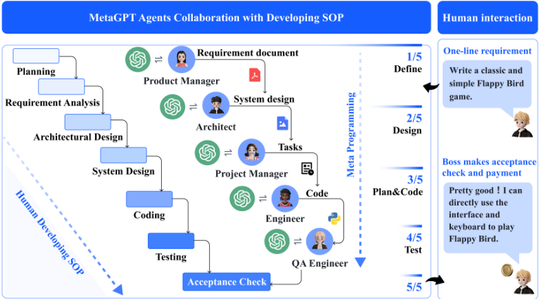
得益于标准操作程序（SOPs），MetaGPT 为元编程（meta-programming）提供了一种颇具前景的途径。在此语境下，我们将元编程 1 界定为“为编程而编程”（programming to program），以区别于范围更广的元学习（meta learning）和“为学习而学习”（learning to learn）领域（Schmidhuber, 1987; 1993a; Hochreiter et al., 2001; Schmidhuber, 2006; Finn et al., 2017）。
这一元编程概念也涵盖了早期的相关工作，如 CodeBERT（Feng et al., 2020），以及近期的项目，如 CodeLlama（Rozière et al., 2023）和 WizardCoder（Luo et al., 2023）。然而，MetaGPT 作为一种独特的解决方案脱颖而出，它通过一个组织良好的专业化智能体（agent）群体实现高效的元编程。每个智能体都具有特定的角色和专长，并遵循某些既定标准。这使得在运行时能够自动进行需求分析、系统设计、代码生成、修改、执行和调试，凸显了基于智能体的技术如何增强元编程。
为了验证 MetaGPT 的设计，我们使用公开可用的 HumanEval（Chen et al., 2021a）和 MBPP（Austin et al., 2021）进行评估。值得注意的是，在代码生成基准测试中，MetaGPT 在 Pass@1 上分别取得 85.9% 和 87.7% 的成绩，创造了新的最先进水平（state-of-the-art, SoTA）。与用于创建复杂软件项目的其他流行框架相比，例如 AutoGPT（Torantulino et al., 2023）、LangChain（Chase, 2022）、AgentVerse（Chen et al., 2023）和 ChatDev（Qian et al., 2023），MetaGPT 在应对更高层次的软件复杂性和提供丰富功能方面同样表现出色。令人瞩目的是，在我们的实验评估中，MetaGPT 实现了 100% 的任务完成率，证明了我们设计的鲁棒性和效率（时间和 token 成本）。
我们的贡献总结如下：
1 https://en.wikipedia.org/w/index.php?title=Metaprogramming
自动编程 自动编程的根源可以深深追溯到上个世纪。1969年，Waldinger & Lee (1969) 提出了"PROW"，这是一个旨在接受以谓词演算编写的程序规范、生成算法并创建 LISP 实现 (McCarthy, 1978) 的系统。Balzer (1985) 和 Soloway (1986) 曾致力于推动自动编程的发展，并指出了实现这一目标的潜在方法。近期的方法则采用自然语言处理（NLP）技术 (Ni et al., 2023; Skreta et al., 2023; Feng et al., 2020; Li et al., 2022; Chen et al., 2018; 2021b; Zhang et al., 2023a; Liu et al., 2023b; Tang et al., 2023a; Muennighoff et al., 2023)。自动编程已经发展成为一个提供诸如 Microsoft Copilot 等付费功能的产业。近来，基于大语言模型（LLMs）的 Agent (Yao et al., 2022; Shinn et al., 2023; Lin et al., 2023) 推动了自动编程的发展。其中，ReAct (Yao et al., 2022) 和 Reflexion (Shinn et al., 2023) 利用思维链（CoT）提示 (Wei et al., 2022) 借助 LLMs 生成推理轨迹和行动计划。这两项工作都证明了 ReAct 风格的推理循环作为赋能自动编程的设计范式的有效性。此外，ToolFormer (Schick et al., 2023) 和 ToolLLM (Qin et al., 2023) 能够通过简单的 API 学习如何使用外部工具。与我们工作最为相关的研究是 Li et al. (2023)，其提出了一个简单直接的编程角色扮演框架，其中涉及扮演不同角色的 Agent 之间的通信。Qian et al. (2023) 利用多个 Agent 进行软件开发。尽管现有论文 (Li et al., 2023; Qian et al., 2023) 提升了生产力，但它们尚未充分利用具有结构化输出格式的有效工作流。这使得应对复杂的软件工程问题变得更加困难。
基于大语言模型（LLM）的多智能体框架 近年来，基于 LLM 的自主智能体在工业界和学术界都获得了极大的关注（Wang et al., 2023b; Zhou et al., 2023b; Zhang et al., 2023b）。许多工作（Chen et al., 2024; Wang et al., 2023c; Du et al., 2023; Zhuge et al., 2023; Hao et al., 2023; Akata et al., 2023; Tang et al., 2023b）通过整合多个智能体之间的讨论来提升 LLM 的问题解决能力。Stable-Alignment（Liu et al., 2023a）通过在沙盒中让 LLM 智能体进行交互、就价值判断达成共识，从而构建指令数据集。其他工作则关注社会学现象。例如，Generative Agents（Park et al., 2023）创建了一个由 25 个智能体组成的“小镇”，以研究语言交互、社会理解和集体记忆。在基于自然语言的心智社会（Natural Language-Based Society of Mind, NLSOM）（Zhuge et al., 2023）中，具有不同功能的智能体通过多轮“心智风暴”（mindstorms）进行交互以解决复杂任务。Cai et al.（2023）提出了一种降低成本的模型，将大模型作为工具制造者、小模型作为工具使用者相结合。
一些工作强调与规划和策略相关的合作与竞争（Bakhtin et al., 2022）；另一些工作则提出了基于 LLM 的经济体系（Zhuge et al., 2023）。这些工作聚焦于开放世界的人类行为模拟，而 MetaGPT 旨在将人类实践引入多智能体框架。此外，基于 LLM 的智能体面临“助手重复指令”或“消息无限循环”的挑战（Talebirad & Nadiri, 2023; Li et al., 2023）。在面向任务的协作中，这些挑战变得更加紧迫，因为此类协作需要一致且互利的交互（Elazar et al., 2021; Wang et al., 2022; Jiang et al., 2023）。这促使我们专注于将软件开发中的标准操作程序（Standard Operating Procedures, SOP）等先进概念应用于多智能体框架。
3
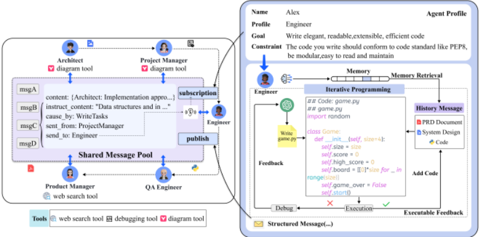
MetaGPT 是一个面向基于大语言模型（LLM）的多智能体系统的元编程框架。第 3.1 节解释了该框架中的角色专业化、工作流与结构化通信，并说明了如何在 SOP 的背景下组织多智能体系统。第 3.2 节提出了一种能够提升角色间通信效率的通信协议。我们还实现了结构化通信接口和一种有效的发布-订阅机制。这些方法使智能体能够从其他角色获取定向信息，并从环境中获取公共信息。最后，我们在第 3.3 节中引入了可执行反馈——一种在运行时进一步提升代码生成质量的自校正机制。
角色专业化 明确的角色专业化能够将复杂的工作分解为更小、更具体的任务。解决复杂任务或问题往往需要具备多样技能与专长的智能体协同合作，每个智能体都贡献针对特定问题量身定制的专业化输出。
在软件公司中，产品经理（Product Manager）通常进行面向业务的分析并提炼洞见，而软件工程师则负责编程。我们在软件公司中定义了五种角色：产品经理（Product Manager）、架构师（Architect）、项目经理（Project Manager）、工程师（Engineer）和 QA 工程师（QA Engineer），如图 1 所示。在 MetaGPT 中，我们为每个角色指定智能体的画像（profile），其中包括其名称、画像、目标和约束。我们还为每个角色初始化特定的上下文和技能。例如，产品经理可以使用网页搜索工具，而工程师可以执行代码，如图 2 所示。所有智能体均遵循 Yao 等人（2022）所描述的 React 风格行为。
每个智能体都会监视环境（即 MetaGPT 中的消息池）以发现重要的观察结果（例如来自其他智能体的消息）。这些消息既可以直接触发动作，也可以协助完成工作。
跨智能体的工作流 通过定义智能体的角色和操作技能，我们可以建立基本的工作流。在我们的工作中，我们遵循软件开发中的标准操作流程（SOP），这使所有智能体能够以顺序方式开展工作。
4
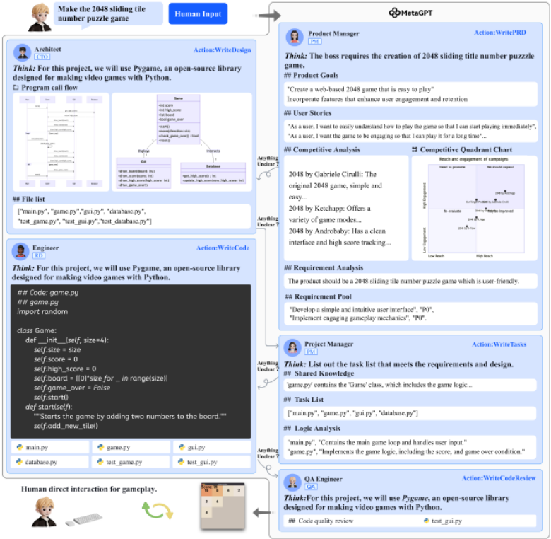
具体而言，如图 1 所示，在获得用户需求后，产品经理会进行深入分析，制定包含用户故事（User Stories）和需求池（Requirement Pool）的详细产品需求文档（PRD）。这可以作为初步的功能分解。随后，结构化的 PRD 被传递给架构师，由其将需求转化为系统设计组件，例如文件列表（File Lists）、数据结构（Data Structures）和接口定义（Interface Definitions）。一旦被纳入系统设计，这些信息便会被导向项目经理以进行任务分配。工程师接着按照所述内容实现指定的类和函数（详见图 2）。在下一阶段，QA 工程师制定测试用例，以保障严格的代码质量。在最后一步，MetaGPT 产出精雕细琢的软件解决方案。我们提供了 MetaGPT 中 SOP 工作流的详细示意图（图 3）和具体实例（附录 B）。
将所有信息共享给每个 Agent 可能导致信息过载。在任务执行过程中，Agent 通常只希望接收与任务相关的信息，以避免受到无关细节的干扰。对这些信息进行有效的管理与分发起着至关重要的作用。我们提供了一种简单而有效的解决方案——订阅机制（见图 2（左））。Agent 不再依赖对话，而是利用特定角色的兴趣来提取相关信息。它们可以基于自身的角色画像选择要关注的信息。在实际实现中，Agent 只有在接收到其全部前置依赖之后才会激活相应的动作。如图 3 所示，架构师主要关注产品经理提供的产品需求文档（PRD），而来自 QA 工程师等角色的文档则可能较少受到关注。
在日常编程任务中，调试和优化过程发挥着重要作用。然而，现有方法往往缺乏自我纠错机制，从而导致代码生成失败。先前的工作引入了不可执行的代码审查和自我反思（Zhao et al., 2023; Yao et al., 2022; Shinn et al., 2023; Dong et al., 2023）。然而，这些方法在确保代码可执行性和运行时正确性方面仍然面临挑战。
由于大语言模型（LLM）的幻觉问题（Manakul et al., 2023），我们最初的 MetaGPT 实现在审查过程中忽略了某些错误。为了克服这一问题，在初始代码生成之后，我们引入了一种可执行反馈机制来迭代地改进代码。更具体地说，如图 2 所示，工程师（Engineer）被要求基于原始的产品需求和设计来编写代码。
这使得工程师能够利用自身的历史执行与调试记忆持续改进代码。为了获取额外信息，工程师会编写并执行相应的单元测试用例，随后接收测试结果。如果测试结果令人满意，则会启动额外的开发任务；否则，工程师会先调试代码，然后再恢复编程。这一迭代测试过程将持续进行，直到测试通过或达到最多 3 次重试为止。
et al., 2023), LangChain (Chase, 2022) with Python Read-Eval-Print Loop (REPL) tool 3 , Agent-
Verse (Chen et al., 2023), and ChatDev (Qian et al., 2023).
4.2
MAIN RESULT
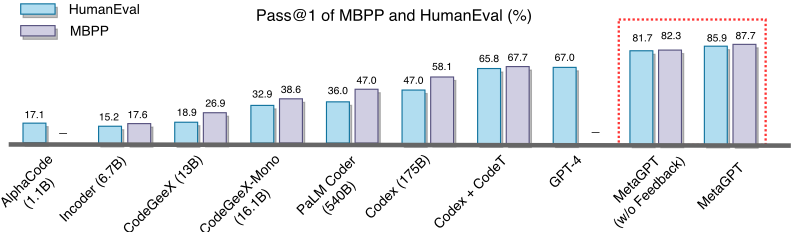
Performance Figure 4 demonstrates that MetaGPT outperforms all preceding approaches in both HumanEval and MBPP benchmarks. When MetaGPT collaborates with GPT-4, it significantly improves the Pass @ k in the HumanEval benchmark compared to GPT-4. It achieves 85.9% and 87.7%
3 https://en.wikipedia.org/wiki/Read-eval-print loop
7
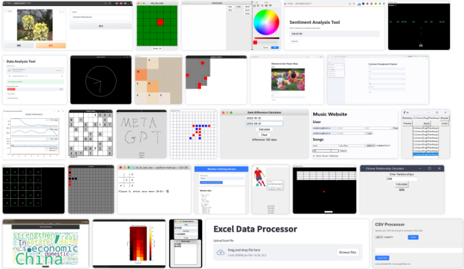
in these two public benchmarks. Moreover, as shown in Table 1, MetaGPT outperforms ChatDev on the challenging SoftwareDev dataset in nearly all metrics. For example, considering the executability, MetaGPT achieves a score of 3.75, which is very close to 4 (flawless). Besides, it takes less time (503 seconds), clearly less than ChatDev. Considering the code statistic and the cost of human revision, it also significantly outperforms ChatDev. Although MetaGPT requires more tokens (24,613 or 31,255 compared to 19,292), it needs only 126.5/124.3 tokens to generate one line of code. In contrast, ChatDev uses 248.9 tokens. These results highlight the benefits of SOPs in collaborations between multiple agents. Additionally, we demonstrate the autonomous software generation capabilities of MetaGPT through visualization samples (Figure 5). For additional experiments and analysis, please refer to Appendix C.
| Statistical Index | ChatDev | MetaGPT w/o Feedback | MetaGPT |
|---|---|---|---|
| (A) Executability | 2.25 | 3.67 | 3.75 |
| (B) Cost#1: Running Times (s) | 762 | 503 | 541 |
| (B) Cost#2: Token Usage | 19292 | 24613 | 31255 |
| (C) Code Statistic#1: Code Files | 1.9 | 4.6 | 5.1 |
| (C) Code Statistic#2: Lines of Code per File | 40.8 | 42.3 | 49.3 |
| (C) Code Statistic#3: Total Code Lines | 77.5 | 194.6 | 251.4 |
| (D) Productivity | 248.9 | 126.5 | 124.3 |
| (E) Human Revision Cost | 2.5 | 2.25 | 0.83 |
| Statistical Index | ChatDev | MetaGPT w/o Feedback | MetaGPT |
与 AutoGPT 等开源基线方法以及 AgentVerse、ChatDev 等自主智能体相比，MetaGPT 提供了面向软件工程任务的功能。如表 2 所示，我们的框架涵盖了广泛的能力，能够高效地处理复杂且专业化的开发任务。引入标准操作流程（SOPs）（例如角色扮演专长、结构化沟通、精简工作流）可以显著提升代码生成效果。其他基线方法也可以轻松集成类 SOP 的设计来提升自身性能，这类似于在 LLM 中注入思维链（chain-of-thought, CoT）(Wei et al., 2022)。
8
| Framework Capabiliy | AutoGPT | LangChain | AgentVerse | ChatDev | MetaGPT |
|---|---|---|---|---|---|
| PRD generation | |||||
| Tenical design genenration | |||||
| API interface generation | |||||
| Code generation | |||||
| Precompilation execution | |||||
| Role-based task management | |||||
| Code review |
| Framework Capabiliy | AutoGPT | LangChain | AgentVerse | ChatDev | MetaGPT |
| Engineer | Product | Architect | Project | #Agents | #Lines | Expense | Revisions | Executability |
|---|---|---|---|---|---|---|---|---|
| 1 | 83 | $ 0.915 | 10 | 1 | ||||
| 2 | 112 | $ 1.059 | 6.5 | 2 | ||||
| 3 | 143 | $ 1.204 | 4 | 2.5 | ||||
| 3 | 205 | $ 1.251 | 3.5 | 2 | ||||
| 4 | 191 | $ 1.385 | 2.5 | 4 |
| Engineer | Product | Architect | Project | #Agents | #Lines | Expense | Revisions | Executability |
角色的有效性 为了理解不同角色对最终结果的影响，我们执行了两项任务，包括生成有效代码和计算平均统计量。当我们排除某些角色时，会生成无法运行的代码。如表 3 所示，在仅有 Engineer 的基础上增加其他角色，能够持续改进修订次数和可执行性。尽管更多的角色会略微增加开销，但整体性能显著提升，证明了各种角色的有效性。
可执行反馈机制的有效性 如图 4 所示，在 MetaGPT 中加入可执行反馈，使其在 HumanEval 和 MBPP 上的 Pass @1 分别显著提升了 4.2% 和 5.4%。此外，表 1 显示，该反馈机制提高了可行性（从 3.67 提升至 3.75），并降低了人工修订的成本（从 2.25 降至 0.83）。这些结果表明，我们设计的反馈机制能够生成更高质量的代码。MetaGPT 以及不含可执行反馈的 MetaGPT 的更多量化结果见表 4 和表 9。
本文提出了 MetaGPT，这是一种新颖的元编程框架，它利用标准作业程序（SOPs）来增强基于大语言模型（LLMs）的多智能体系统的问题求解能力。MetaGPT 将一组 Agent 建模为一个模拟的软件公司，这类似于模拟小镇（Park et al., 2023）以及 Voyager 中的 Minecraft 沙盒（Wang et al., 2023a）。MetaGPT 利用了角色专业化、工作流管理以及消息池和订阅等高效共享机制，使其成为一个面向自主 Agent 和多智能体框架的灵活且可移植的平台。它采用可执行反馈机制来在运行时提升代码生成质量。在大量实验中，MetaGPT 在多个基准测试上取得了最先进的性能。类人 SOPs 的成功融入，为人工多智能体系统中受人类启发的技术的未来研究带来了启发。我们也将本工作视为对基于 LLM 的多智能体框架进行规范的一次早期尝试。另请参见展望（附录 A）。
9
Sirui Hong 完成了大部分实验并设计了可执行反馈模块。她还主导了论文初稿的撰写，Ceyao Zhang 为其提供了支持，Jinlin Wang 和 Zili Wang 也提供了支持。Mingchen Zhuge 设计了自我改进模块，讨论了额外的实验，并主导了当前版本的撰写。Jiaqi Chen 协助了 MBPP 实验，拟定了方法部分的提纲，并为当前版本的撰写做出了贡献。Xiawu Zheng 提供了宝贵的指导，并对论文进行了审阅和编辑。Yuheng Cheng 参与了评估指标的设计和 HumanEval 实验。Steven Ka Shing Yau、Zijuan Lin、Liyang Zhou、Lingfeng Xiao 协助了 MBPP 实验以及与开源基线方法的对比。Chenyu Ran 绘制了大部分插图。Chenglin Wu 是 DeepWisdom 的 CEO，发起了 MetaGPT 项目，为其做出了最重大的代码贡献，并指导了本项目。Jürgen Schmidhuber 是 KAUST 人工智能计划（AI Initiative）主任兼 IDSIA 科学主任，他指导了本项目并协助了论文撰写。
本文正文中所述的 MetaGPT 版本存在一个局限：每个软件项目都是独立执行的。然而，通过积极的团队协作，软件开发团队应当从开发每个项目所积累的经验中学习，从而随着时间的推移变得更加兼容、更加成功。
这在一定程度上与递归自我改进（recursive self-improvement）的思想相关。该思想于 1965 年被非正式地首次提出（Good, 1965），自 1987 年起出现了首批具体实现（Schmidhuber, 1987; 1993b; Schmidhuber et al., 1998），并最终发展为数学上最优的自指自我改进器（self-referential self-improvers）这一概念（Schmidhuber, 2003; 2009）。一般而言，一个系统应当从现实世界的经验中学习，并从学习的经验中元学习（meta-learn）出更好的学习算法，再从元学习的经验中元元学习（meta-meta-learn）出更好的元学习算法，依此类推，除可计算性和物理定律之外不受任何限制。
更近期的、与此有一定关联的工作利用大语言模型（LLMs）的推理能力，递归地改进 LLM 的提示词（prompt），以提升其在某些下游任务上的性能（Fernando et al., 2023; Zelikman et al., 2023），这类似于 2015 年提出的自适应提示工程师（adaptive prompt engineer）（Schmidhuber, 2015）：其中一个神经网络学习为另一个预训练神经网络生成查询或提示词序列，后者的回答可以帮助前一个网络更快地学习新任务。
在我们目前的工作中，我们还探索了一种自指机制，该机制根据 Agent 在软件开发过程中观察到的信息，递归地修改 Agent 的约束提示词。我们的初步实现方式如下。在每个项目开始之前，软件公司中的每个 Agent 都会回顾之前的反馈，并对其约束提示词做出必要的调整。这使它们能够持续地从过去的项目经验中学习，并通过改进公司中的每个个体来增强整个多智能体系统。我们首先为每个 Agent 建立了一个交接反馈（handover feedback）动作。该动作负责批判性地总结在之前项目开发过程中接收到的信息，并将这些信息整合到更新后的约束提示词中。总结后的信息被存储在长期记忆中，以便能够被未来的约束提示词更新所继承。在启动新项目时，每个 Agent 都以一个 react 动作开始。每个 Agent 评估接收到的反馈，并在约束提示词中总结自己可以如何改进。
当前的一个局限在于，这些基于总结的优化只会修改角色特化（第 3.1 节）中的约束，而不会修改通信协议（第 3.2 节）中的结构化通信接口。未来的进展仍有待探索。
在现实世界的团队协作中，交互过程往往不是硬编码的。例如，在一家软件公司中，协作标准作业程序（SOP）可能会动态变化。
关于这种自组织的一种实现方式，一篇关于“基于自然语言的心智社会”（NLSOM）的论文（Zhuge et al., 2023）进行了讨论，该论文提出了“心智经济”（EOM）的概念，这是一个面向大语言模型（LLM）及其他智能体社会的强化学习（RL）框架。EOM 并不使用标准的 RL 技术通过修改神经网络参数来优化系统的总奖励，而是利用自由市场中的供需原则，向那些为经济成功（奖励）做出贡献的智能体分配信用（货币）。
DeepWisdom 近期推出的基于智能体的平台（AgentStore⁴）与 EOM 的信用分配概念相兼容。AgentStore 中的每个智能体都提供一份服务清单及其对应的成本。平台提供了便捷的 API，使人类用户或平台中的智能体能够轻松地从其他智能体处购买服务，以完成自身的服务。图 6 展示了 AgentStore 的用户界面（UI），其中展示了具备不同技能的各类智能体。此外，个人开发者可以参与构建新的智能体，并在社区内实现协作开发。具体而言，AgentStore 允许用户根据自身需求订阅智能体，并按使用量付费。而且，用户还可以购买额外的能力，以扩展其现有智能体的即插即用功能。这使得用户能够逐步升级其智能体。在 MetaGPT 框架内，AgentStore 可以支持各种智能体之间的协作。用户可以将多个智能体汇集在一起，以执行更复杂的任务或项目，并且所有智能体都共享并遵循 MetaGPT 中定义的开发与通信协议。
4 http://beta.deepwisdom.ai
15
16
在本节中，我们概述了使用 MetaGPT 进行软件开发的完整流程。该流程从用户的输入命令开始（如附录 B.1 所示），最终产出按照用户规格说明设计的软件。
在接收到用户的指令后，MetaGPT 会与一个专业开发团队协作来完成任务。以下是一个用户输入示例：
用户输入 1 编写一个 python3 图形用户界面（GUI）应用，使你可以用它来绘制图像
产品需求文档 1 2 ## 需求分析 3 该产品应为一个 Python3 GUI 应用，用作取色器。它应允许用户 ↪ → 选取屏幕上的任意颜色，并显示相应的 RGB 值。RGB ↪ → 值应随取色器的移动实时更新。界面应 ↪ → 简单且易于使用。 4 5 ## 需求池 6 '''python 7 [ 8 ("设计一个用户友好的取色器 GUI", "P0"), 9 ("实现颜色选择功能", "P0"), 10 ("显示所选颜色的 RGB 值", "P0"), 11 ("随取色器的移动实时更新 RGB 值", "P0"), 12 ("测试应用程序的准确性与性能", "P1") 13 ] 14 ''' 15 16 ## UI 设计草案 17 UI 应极简且直观。它应主要由一个取色器组成，该取色器 ↪ → 可以是屏幕的一个放大区域，用户可随意移动。当前所选颜色的 ↪ → RGB 值应醒目显示，并随 ↪ → 取色器的移动实时更新。布局应干净整洁， ↪ → 以功能性和易用性为重心。 18 19 ## 任何不明确之处 20 没有不明确之处。
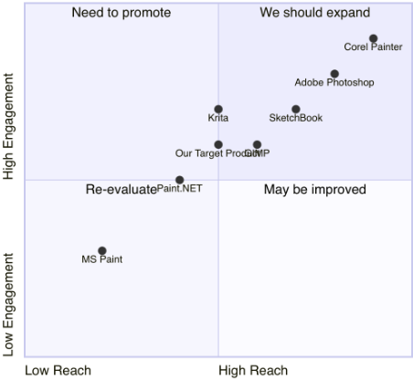
18
架构师（Architect）智能体根据产品需求文档（PRD）中的需求，制定包括系统架构图和接口定义在内的技术规范。首先，Architect 确定总体技术路线；随后进行项目架构设计，包括文件、类（图 8）以及时序流程图（图 12）。之后，Architect 的文档被交给项目经理，用于任务分配与执行。
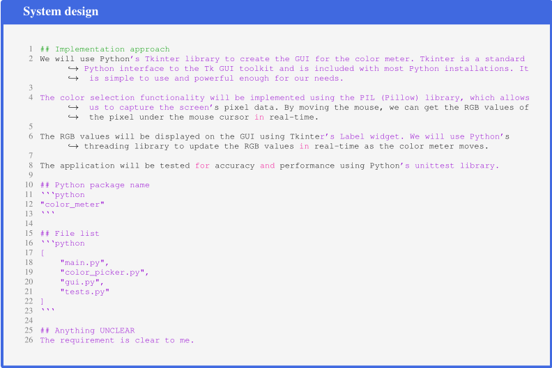
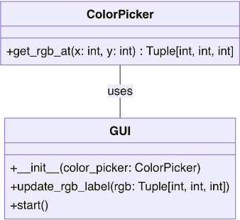
项目经理（Project Manager）将项目分解为任务列表。此外，每个代码文件都会根据其预期功能进行分析，然后作为一个独立任务分配给工程师（Engineer）。
19
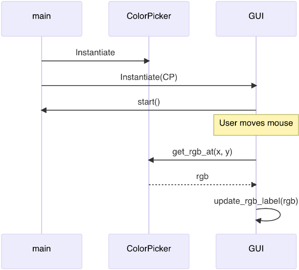
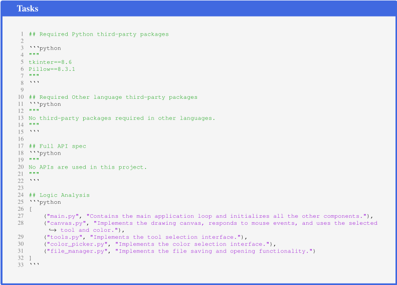
20
1 ## Task list 2 '''python 3 [ 4 "main.py", 5 "canvas.py", 6 "tools.py", 7 "color_picker.py", 8 "file_manager.py" 9 ] 10 ''' 11 12 ## Shared Knowledge 13 '''python 14 """ 15 The 'Tkinter' library is used for creating the GUI of the application. It provides various widgets ↪ → like frames and canvases which are used in this project. 16 The 'Pillow' library is used for handling image files. It is used in the 'file_manager.py' for ↪ → saving and opening image files. 17 The 'main.py' file is the entry point of the application. It initializes all the other components ↪ → and starts the application loop. 18 """ 19 ''' 20 21 ## Anything UNCLEAR 22 The project requirements and implementation approach are clear. However, we need to ensure that ↪ → all team members are familiar with the Tkinter and Pillow libraries. If not, they may ↪ → need some time to learn these libraries before starting the development.
21
Engineer Given the provided file structure and function definitions, an Engineer agent requires only fundamental development skills to complete the development tasks. Due to the large number of files, we present only one auto-generated code file here.
Generated code (color picker.py) 1 import tkinter as tk 2 from tkinter import colorchooser 3 class ColorPicker: 4 def __init__(self, root: tk.Tk, color: str = 'black'): 5 self.frame = tk.Frame(root) 6 self.color = color 7 8 self.color_button = tk.Button(self.frame, text='Color', command=self.select_color) 9 self.color_button.pack(fill='x') 10 11 def select_color(self): 12 color = colorchooser.askcolor()[1] 13 if color is not None: 14 self.color = color 15 16 def pack(self, **kwargs): 17 self.frame.pack(**kwargs) 18 19 def get_color(self): 20 return self.color
QAEngineer Upon receiving the code output from the Engineer, the QA Engineer generates unit test code and reviews it to identify and fix any bugs, ensuring high-quality software.
Generated Unit tests (test.py) 1 import unittest 2 import tkinter as tk 3 # You might want to move the ColorPicker class to another file, let's say color_picker.py 4 # from color_picker import ColorPicker 5 6 class TestColorPicker(unittest.TestCase): 7 8 def setUp(self): 9 self.root = tk.Tk() 10 self.cp = ColorPicker(self.root) 11 12 def tearDown(self): 13 # This is important to close the tk window after tests 14 self.root.destroy() 15 16 def test_initial_color(self): 17 # Test the default color during initialization 18 self.assertEqual(self.cp.get_color(), 'black') 19 20 def test_set_and_get_color(self): 21 # Test setting a new color and retrieving it 22 new_color = '#ffffff' # white color 23 self.cp.color = new_color 24 self.assertEqual(self.cp.get_color(), new_color) 25 26 27 if __name__ == '__main__': 28 unittest.main()
Output Ultimately, as shown in Figure 10, MetaGPT generates a functional application named 'Drawing App'.
22
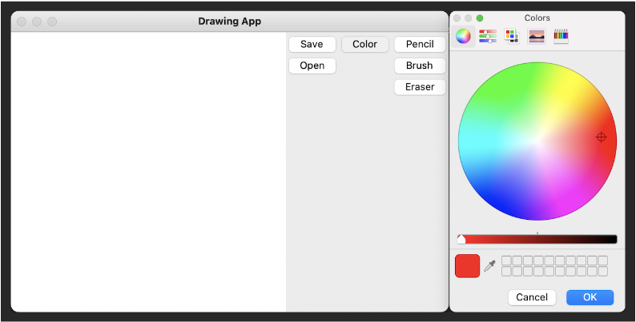
The SoftwareDev dataset includes 70 diverse software development tasks. Table 8 displays the names and detailed prompts of 11 tasks within the dataset. Note that the first seven tasks listed are used in the main experiments of this paper.
MetaGPT 的定量结果 如表 4 所示，MetaGPT 取得了 3.9 的平均得分，超过了基于 Chat 链的 ChatDev Zhao et al. (2023) 的 2.1 分。对比通用智能算法的得分，包括 AutoGPT Torantulino et al. (2023) 在内的算法得分均为 1.0，未能生成可执行代码。我们观察到，生成的代码往往较短，缺乏全面的逻辑，并且常常无法正确处理跨文件依赖。
尽管 AutoGPT (Torantulino et al., 2023)、Langchain (Chase, 2022) 和 AgentVerse (Chen et al., 2023) 等模型展现出强大的通用问题求解能力，但它们缺乏开发复杂系统的一个关键要素：系统化地解构需求。相比之下，MetaGPT 通过专业化的分工和标准操作程序（SOP）工作流，简化了将抽象需求转化为详细的类设计与函数设计的过程。与 ChatDev (Zhao et al., 2023) 相比，MetaGPT 的结构化消息传递和反馈机制不仅减少了通信信息的丢失，还提升了代码的执行效果。
不带可执行反馈的 MetaGPT 定量结果 表 9 展示了使用 GPT-4 32K 的 MetaGPT 在 SoftwareDev 数据集中 11 个任务上的性能。表中还展示了全部 70 个任务的平均性能（见最后一行）。注意，此处使用的 MetaGPT 版本是不带可执行反馈机制的基础版本。
使用不同大语言模型（LLM）的 MetaGPT 定量结果 为了验证 MetaGPT 在不同 LLM 上的性能，我们随机选取了 5 个 SoftwareDev 任务，并使用 GPT-3.5 和 Deepseek Coder 33B 5 作为后端开展了实验。如表 5 所示，结果表明，尽管 MetaGPT 能够使用这些 LLM 完成任务，但使用 GPT-4 作为后端能获得更优的性能。
5 https://deepseekcoder.github.io
23
| Task | AutoGPT | LangChain | AgentVerse | ChatDev | MetaGPT |
|---|---|---|---|---|---|
| Flappy bird | 1 | 1 | 1 | 2 | 3 |
| Tank battle game | 1 | 1 | 1 | 2 | 4 |
| 2048 game | 1 | 1 | 1 | 1 | 4 |
| Snake game | 1 | 1 | 1 | 3 | 4 |
| Brick breaker game | 1 | 1 | 1 | 1 | 4 |
| Excel data process | 1 | 1 | 1 | 4 | 4 |
| CRUD manage | 1 | 1 | 1 | 2 | 4 |
| Average score | 1 | 1 | 1 | 2.1 | 3.9 |
| Task | AutoGPT | LangChain | AgentVerse | ChatDev | MetaGPT |
| Model | Open source | Time(/s) | # Lines | Executability | Revisions |
|---|---|---|---|---|---|
| MetaGPT (w/ GPT-3.5) | 75.18 | 161.6 | 2.8 | 2.4 | |
| MetaGPT (w/ GPT-4) | 552.94 | 178.2 | 3.8 | 1.2 | |
| MetaGPT (w/ Deepseek Coder 33B) | 1186.2 | 120.2 | 1.4 | 2.6 |
| Model | Open source | Time(/s) | # Lines | Executability | Revisions |
指令级别的影响（高层指令 v.s. 详细指令） 人类初始输入级别的差异是否会对性能结果产生显著影响？例如：
我们进行了额外的实验来研究这一方面：我们从 SoftwareDev 中选取了 5 个任务，并为它们构建了详细的提示（prompt）。以下是实验结果：
| Model | # Word | Time(/s) | Token usage | # Lines | Executability | Productivity | Reversions |
|---|---|---|---|---|---|---|---|
| High-level | 13.2 | 552.9 | 28384.2 | 178.2 | 3.8 | 163.8 | 1.2 |
| Detailed | 42.2 | 567.8 | 29657 | 257 | 4 | 118 | 1.6 |
| Model | # Word | Time(/s) | Token usage | # Lines | Executability | Productivity | Reversions |
我们观察到：由于需求和功能更加清晰，详细的提示能够带来更好的软件项目，且生产率比率更低；而简单的输入在使用 MetaGPT 时仍能生成足够好的软件，其可执行性评分为 3.8，与详细提示场景相当。（注意，Productivity = Token usage / Total Code Lines。该比率越低越好。）
GPT 各变体在 HumanEval 基准测试中的表现 我们以 GPT-4 在 HumanEval 上 67% 的得分（OpenAI, 2023）作为基线，并认可其在 HumanEval 基准测试中的通过率。我们进一步扩展实验（五次），在各种条件下使用 GPT-4 (gpt-4-0613) 和 GPT-3.5Turbo (gpt-3.5-turbo-0613) 来评估性能。(A) 我们直接使用 HumanEval 中的提示词调用 OpenAI API。(B) 我们调用 OpenAI API，并使用正则表达式解析响应中的代码。(C) 我们添加了一个额外的系统提示词，然后调用 OpenAI API。该提示词为 'You are an AI that only responds with Python code, NOT ENGLISH. You will be given a function signature and its docstring by the user. Write your full implementation (restate the function signature).' 如表 7 所示，GPT-4 在 HumanEval 数据集上对提示词、代码解析器和后处理结果更为敏感。在没有提示词的情况下，GPT-3.5-Turbo 难以返回正确的补全代码。
24
| Settings | Model | 1 | 2 | 3 | 4 | 5 | Avg. | Std. |
|---|---|---|---|---|---|---|---|---|
| A | gpt-4-0613 | 0.732 | 0.707 | 0.732 | 0.713 | 0.738 | 0.724 | 0.013 |
| A | gpt-3.5-turbo-0613 | 0.36 | 0.366 | 0.36 | 0.348 | 0.354 | 0.357 | 0.007 |
| B | gpt-4-0613 | 0.787 | 0.811 | 0.817 | 0.829 | 0.817 | 0.812 | 0.016 |
| B | gpt-3.5-turbo-0613 | 0.348 | 0.354 | 0.348 | 0.335 | 0.348 | 0.346 | 0.007 |
| C | gpt-4-0613 | 0.805 | 0.805 | 0.817 | 0.793 | 0.78 | 0.8 | 0.014 |
| C | gpt-3.5-turbo-0613 | 0.585 | 0.567 | 0.573 | 0.579 | 0.579 | 0.577 | 0.007 |
| Settings | Model | 1 | 2 | 3 | 4 | 5 | Avg. | Std. |
定性结果 图 11 和图 12 展示了 Architect 智能体在设计一个复杂推荐系统方面所做工作的成果。这些图展示了完整的系统界面设计和程序调用流程。后者对于构建一个精密的自动化系统至关重要。必须强调这种分工在开发自动化软件框架中的重要性。
系统方面 目前，我们的系统尚无法完全满足特定场景的需求，例如 UI 和前端，因为我们尚未引入此类智能体和多模态工具。此外，尽管在同类框架中生成的代码量最多，但要满足现实世界应用多样而复杂的需求仍然具有挑战性。
人类用户方面 对用户而言，一个关键挑战是如何中断每个智能体的运行过程，或为每个智能体设置起始运行点（检查点）。
失业与技能过时 MetaGPT 使更多人能够用自然语言进行编程，从而让工程师更容易上手。多年来，编程语言已从穿孔卡片发展到汇编语言、C、Java、Python，直至如今的自然语言。因此，人类的编程能力日益娴熟，与编程相关职位的需求也随之增加。此外，用自然语言编程可能提供显著更平缓的学习曲线，使编程对更广泛的受众而言更易上手。
透明度与问责制 MetaGPT 是一个开源框架，通过自然语言促进多个智能体之间的交互式通信。人类可以以最高级别的控制权启动、观察和停止运行。它提供对自然语言的实时解释与操作，显示在屏幕和日志中，从而确保透明度。MetaGPT 增强了“自然语言编程”的能力，而人类工程师既是用户，也对结果负责。
隐私与数据安全 MetaGPT 在本地运行，确保用户数据的隐私与安全。它不收集用户数据。对于与第三方大语言模型（LLM）（例如 OpenAI 提供的模型）的交互，建议用户参阅相应的隐私政策（例如 OpenAI Privacy Policy）。不过，我们也提供了以开源 LLM 作为后端的选项。
25
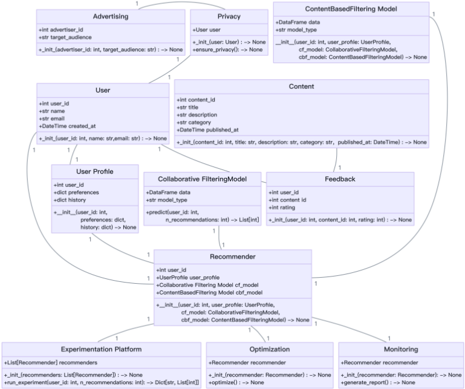
MetaGPT 凭借其独特的设计也缓解或解决了这些挑战：
高效利用上下文 这里存在两个子挑战。其一，准确展开简短的自然语言描述以消除歧义。其二，在冗长上下文中保持信息的有效性，使 LLM 能够专注于相关数据而不受干扰。
减少幻觉 使用 LLM 生成完整的软件程序会面临代码幻觉问题——包括函数实现不完整、依赖缺失以及潜在的未发现缺陷，这些问题可能更为严重。由于任务定义模糊，LLM 在软件生成方面常常表现不佳。专注于需求分析和软件包选择等细粒度任务能够提供引导性思维，而这正是 LLM 在宽泛任务求解中所缺乏的。
在 MetaGPT 中，我们使用全局消息池和订阅机制来解决“信息过载”问题，即接收到过多或无关信息的问题。这一问题依赖于具体应用。MetaGPT 采用消息池来精简通信，从而确保效率。此外，订阅机制会过滤掉无关的上下文，增强信息的相关性和实用性。在有效沟通至关重要的软件设计场景和标准操作流程（SOP）中，这一设计尤为关键。
26
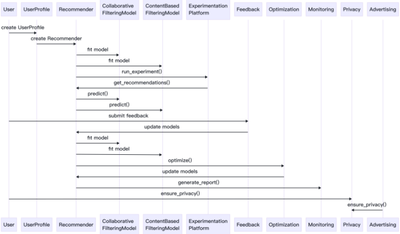
27
| Task ID | Task | Prompt |
|---|---|---|
| 0 | Snake game | Create a snake game. |
| 1 | Brick breaker game | Create a brick breaker game. |
| 2 | 2048 game | Create a 2048 game for the web. |
| 3 | Flappy bird game | Write p5.js code for Flappy Bird where you control a yellow bird continu- ously flying between a series of green pipes. The bird flaps every time you left click the mouse. If it falls to the ground or hits a pipe, you lose. This game goes on indefinitely until you lose; you get points the further you go. |
| 4 | Tank battle game | Create a tank battle game. |
| 5 | Excel data process | Write an excel data processing program based on streamlit and pandas. The screen first shows an excel file upload button. After the excel file is uploaded, use pandas to display its data content. The program is required to be concise, easy to maintain, and not over-designed. It uses streamlit to process web screen displays, and pandas is sufficient to process excel reading and display. Please make sure others can execute directly without introducing additional packages. |
| 6 | CRUD manage | Write a management program based on the crud addition, deletion, modifi- cation and query processing of the customer business entity. The customer needs to save this information: name, birthday, age, sex, and phone. The data is stored in client.db, and there is a judgement whether the customer table ex- ists. If it doesn't, it needs to be created first. Querying is done by name; same for deleting. The program is required to be concise, easy to maintain, and not over-designed. The screen is realized through streamlit and sqlite-no need to introduce other additional packages. |
| 7 | Music transcriber | Develop a program to transcribe sheet music into a digital format; provid- ing error-free transcribed symbolized sheet music intelligence from audio through signal processing involving pitch and time slicing then training a neural net to run Onset Detected CWT transforming scalograms to chroma- grams decoded with Recursive Neural Network focused networks. |
| 8 | Custom press releases | Create custom press releases; develop a Python script that extracts rele- vant information about company news from external sources, such as social media; extract update interval database for recent changes. The program should create press releases with customizable options and export writings to PDFs, NYTimes API JSONs, media format styled with interlink internal fixed character-length metadata. |
| 9 | Gomoku game | Implement a Gomoku game using Python, incorporating an AI opponent with varying difficulty levels. |
| 10 | Weather dashboard | Create a Python program to develop an interactive weather dashboard. |
| Task ID | Task | Prompt |
28
| Code executability | 4 4 | 3 2 | 3 | 4 | 4 | 4 2 | 3 | 4 | 3.36 | |
|---|---|---|---|---|---|---|---|---|---|---|
| Cost of revision costs | 1. TypeError 1. TypeError 1. lack | @app.route('/') 1. PNG file miss- ing 2. Compile bug fixes | 1. PNG file missing 2. Com- pile bug fixes 3. pygame.surface not | initialize 1. dependency er- ror 2. ModuleNot- FoundError | 0 | 0 1. tensorflow ver- | sion error 2. model training method not implement 1. dependency er- ror 2. URL 403 er- | ror 1. dependency er- ror 2. missing main | func. 0.51 (only consider | item scored 2, 3 or 4) |
| Cost statistics time costsmoney | 582.04 $ 1.09 566.30 $ 1.35 553.11 $ 1.04 | 481.34 $ 1.01 | 599.58 $ 1.30 | 585.10 $ 1.51 | 398.83 $ 0.90 | 435.83 $ 0.92 621.73 $ 1.27 | 550.88 | $ 1.27 $ 0.92 | 438.50 | 516.71 $1.12 |
| #prompt tokens #completion tokens | 24087.00 6157.00 32517.00 6238.00 21934.00 6316.00 | 22951.00 5312.00 | 30087.00 6567.00 | 35590.00 7336.00 | 25673.00 5832.00 | 29139.00 7104.00 29372.00 6499.00 | 24799.00 5734.00 24109.00 | 5363.00 | 26626.86 6218.00 | |
| statistics doc #lines per doc file | 70.00 76.67 235.00 78.33 | 67.33 | 70.00 | 96.00 | 87.00 | 110.67 100.33 | 90.00 | 84.67 | 80.00 | |
| 'Task ID'. Doc #lines of | 210.00 230.00 | 202.00 | 210.00 | 294.00 | 261.00 | 332.00 | 301.00 | 270.00 | 254.00 | 240.00 |
| while 'ID' is file #doc files | 3.00 3.00 3.00 | 3.00 | 3.00 | 3.00 | 3.00 | 3.00 3.00 | 3.00 | 3.00 | 3.00 | |
| number of', #lines per code | 39.20 31.83 66.00 | 32.80 | 33.83 | 36.50 | 18.25 | 79.00 | 43.00 | 43.00 | 31.00 | 42.98 |
| denotes 'The Code statistics #lines of code | 196.00 191.00 198.00 | 164 | 203.00 | 219.00 | 73.00 | 316.00 215.00 | 215.00 93.00 | 191.57 | ||
| files | 6.00 3.00 | 5.00 | 6.00 | 5.00 | 3.00 | |||||
| ID | 0 1 2 | 3 | 4 | 5 6.00 | 6 4.00 | 7 4.00 8 | 9 10 | Avg. 4.71 | ||
| included. '#' #code | 5.00 | 5.00 |
| Code executability | 4 4 | 3 2 | 3 | 4 | 4 | 4 2 | | 3 | 4 | 3.36 |
29